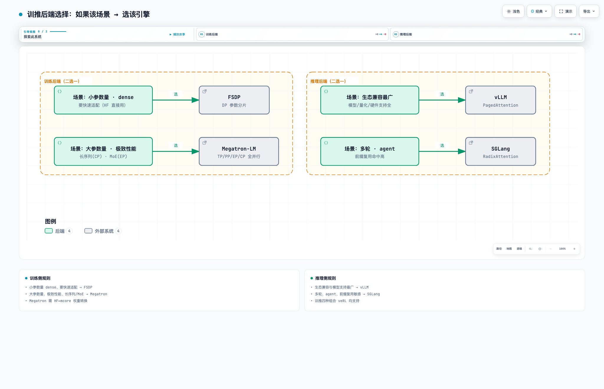
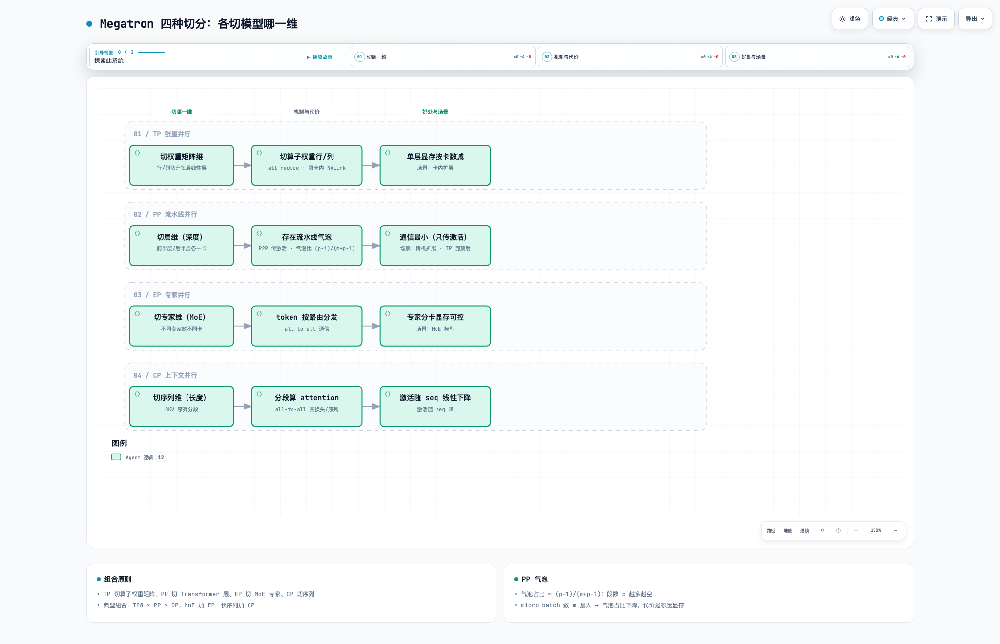

四、训推后端详解
RL 训练框架由一个调度层和训推两个引擎组成。训练引擎二选一（FSDP / Megatron），推理引擎二选一（vLLM / SGLang），各引擎的内部并行与选择规则如下。

交互版：rl-08-后端选择.html
1. 训练后端
FSDP（Fully Sharded Data Parallel）：数据并行——每卡跑不同数据；切模型参数/梯度/优化器状态：非计算时段保持分片（每卡只存 1/N），前向/反向到某层时 all-gather 把该层完整参数聚合回来、用完即弃；反向梯度通过 reduce-scatter 归约、每卡只收到自己负责的分片。通信 = all-gather + reduce-scatter 交替。配置面小，HF 模型直接可用。长序列可开 SP（切序列）。
适用：小参数量 dense 模型（7B–70B 常见）、快速适配。
Megatron-LM：NVIDIA 的大模型训练库，四种切分各切模型的不同维度、可组合：

交互版：rl-09-切分维度.html
- TP（张量并行）——切算子权重矩阵的行/列（
nn.Linear→ColumnParallelLinear/RowParallelLinear），多卡同算一层。通信：all-reduce（每层前向反向各一次）→ 限卡内 NVLink 域（通常 8 卡）最优，跨机 TP 代价陡增。好处：单层显存按卡数直接减。场景：模型单卡放不下时的卡内扩展。 - PP（流水线并行）——切 Transformer Layer：前半段层一卡、后半段一卡，数据像流水线流过。通信：P2P（只在段界传激活，量小，跨机友好）。存在流水线气泡（pipeline bubble）：各段轮流等待形成空闲，气泡占比 ≈ (p−1)/(m+p−1)；micro batch 填充：一个 batch 切成 m 个微批依次注入，微批越多气泡占比越小（代价是激活积压占显存）。好处：通信量在四种切分里最小。场景：跨机扩展、TP 到顶后的继续切分。
- EP（专家并行）——切专家维（MoE）：不同专家放不同卡，token 按路由 all-to-all 分发。好处：MoE 参数大而激活稀疏，专家分卡后单卡显存可控。场景：MoE 模型。
- CP（上下文并行）——切序列维（长度）：QKV 序列分段、attention 分头多卡算（SP 同为切序列：LayerNorm/Dropout 等序列维算子分片，all-gather/reduce-scatter 通信）。好处：激活显存随序列长线性下降。场景：32K+ 长序列训练的必选项。
适用：跨机大规模（数百 B）、长序列、MoE、训速优先的场景，Megatron 比 FSDP 更有优势；代价是适配成本高（mcore 转换 + 配置复杂）。
💡 除了解切分的含义和场景，不同切分的通信也不同，可以大致了解下
2. 推理后端
两个引擎都是高吞吐 LLM 推理服务，核心差异在 KV Cache 与调度：
| 维度 | vLLM | SGLang |
|---|---|---|
| 适用场景 | 无共享上下文的批量生成——每次请求独立一问一答（聊天 API、批量采样、离线跑数据） | 多轮对话、agent、RL 组采样——请求间共享上文 |
| 模型支持 | 种类最全：LLM/多模态/新模型通常第一时间可用 | 主流 LLM/MoE/VLM 齐备，Qwen/GLM 系新模型跟进快 |
| 硬件支持 | NVIDIA / ROCm / CPU / TPU | NVIDIA 为主 |
| 吞吐 | 无共享前缀时与 SGLang 接近（版本互有胜负）；带量化时占优（FP8/INT8/Marlin kernel 最全） | 有共享前缀时显著更高：Radix 缓存免重复 prefill，省的是整段 prefill 计算 |
| 时延 | 无前缀时 TTFT 稳定（chunked prefill 削尖峰）；投机解码配置最全 | 前缀命中时 TTFT 极低（直接复用 KV，跳过 prefill） |
| RL 集成 | colocate 下可休眠让显存（sleep_replicas） |
生成可中断/续作（partial rollout 依赖）、rollout server 路径顺 |
吞吐与时延的差异取决于有没有可复用的前缀：没有共享前缀时两者性能接近，此时 vLLM 的量化（FP8/INT8 kernel 最全）和投机解码配置更完备，吞吐更高；有共享前缀时（RL 组采样、多轮、agent），SGLang 用 Radix 缓存跳过重复的 prefill 计算，吞吐更高、首 token 时延更低。vLLM 的性能优势 = 量化与投机解码配置更全；SGLang 的性能优势 = 前缀缓存免重复计算。
选择规则：单轮、无共享前缀 → vLLM；多轮 / 组采样 / agent → SGLang。